Високопроходими противопожарни трактори
Вземете офертаБезспорно високопроходимите пожарни автомобили са основното средство за водоснабдяване и гасене на горски пожари. Тяхната дейност обаче може да бъде значително подпомогната от иновативния продукт, проектиран и произведен от BULFIRE Ltd – ПОЖАРНИЯ ТРАКТОР. Този пожарен трактор притежава редица технически и експлоатационни качества, които пожарните автомобили нямат. Съвместната работа на пожарни автомобили и пожарни трактори дава най-добрата възможност за успешно гасене на големи и сложни горски пожари.
Пожарните трактори се изграждат върху специално подбрани здрави шасита. Има два вида пожарни трактори – леки и тежки. Леките пожарни трактори се предлагат без ремарке и с ремарке.
Тежките пожарни трактори могат да се използват без ремарке или с ремарке. При работа с ремарке се осигурява значителен воден ресурс за гасене на горски и полски пожари.
Двигателите на леките и тежките трактори задвижват пожарните помпи чрез специално проектирани и произведени механични трансмисии.
Леки пожарни трактори
Леки пожарни трактори без ремарке
Леките пожарни трактори, които работят без ремарке, се изграждат върху тракторни шасита, специално проектирани и произведени за работа като горски трактори. Базовото тракторно шаси се произвежда в ЕС/Европа с двигател Perkins, Caterpillar, John Deere или D-XXX.
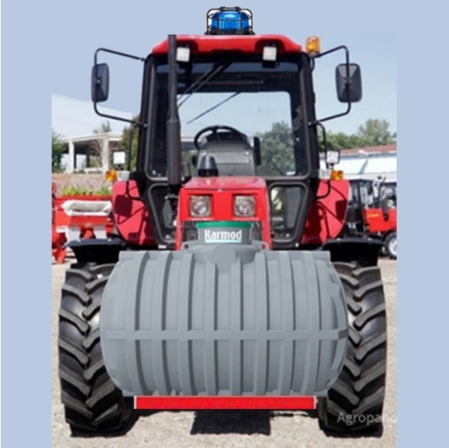
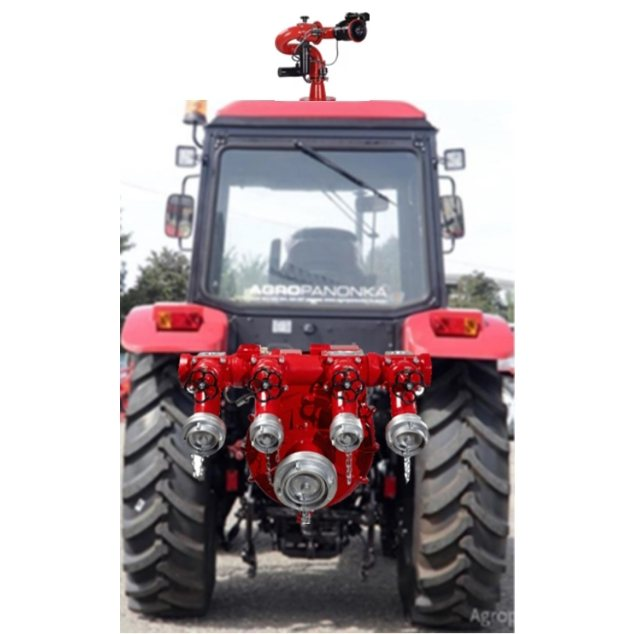
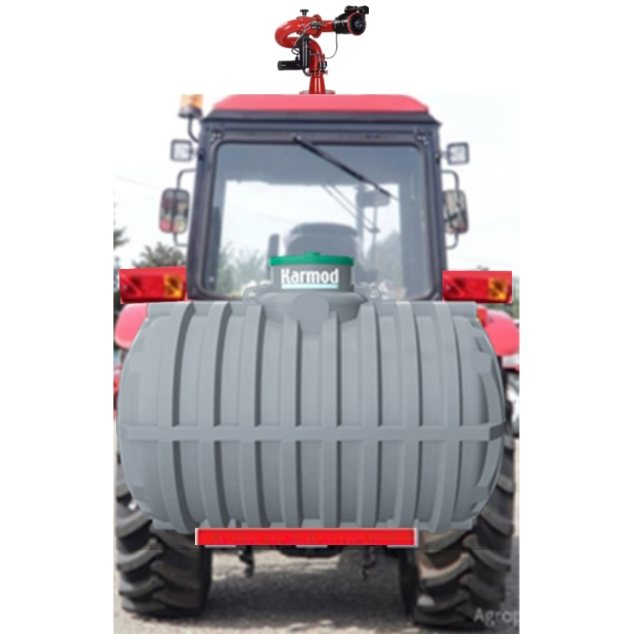
Леките пожарни трактори, които работят без ремарке, се изграждат върху тракторни шасита, специално проектирани и произведени за работа като горски трактори. Мощността на леките пожарни трактори за работа без ремарке е 90 к.с. – 130 к.с. Те носят 3 000 л – 4 000 л вода и имат пожарни помпи с дебит 800 л/мин – 1 600 л/мин.
Резервоарите на леките пожарни трактори се изработват от полиетилен с висока плътност или от неръждаема стомана. Те се демонтират лесно, така че тракторът да може да се използва за други цели извън сезона на горските пожари – за почистване на сняг, при наводнения и други бедствия.
Леки пожарни трактори с ремарке
Леките пожарни трактори, които работят с ремарке, се изграждат върху тракторно шаси, специално проектирано и произведено за работа като горски трактор. Тракторните ремаркета са здрави и предназначени за работа по пресечен терен. Мощността на леките пожарни трактори за работа без ремарке е 150 к.с. – 220 к.с. Те носят 10 000 л или 15 000 л вода и имат пожарни помпи с дебит 2 400 л/мин.
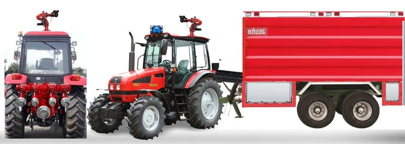
Пожарните тракторни ремаркета се откачат лесно от трактора, така че той да може да се използва за други цели извън сезона на горските пожари – за почистване на сняг, при наводнения и други бедствия.
Тежки пожарни трактори
Тежките пожарни трактори са специално проектирани и произведени за работа като горски трактори. Конструкцията им е изключително здрава и пригодена за специфичните условия в гората. Базовото шаси на трактора се произвежда в ЕС/Европа с двигател Perkins, Cummins, John Deere или ЯМЗ.
Тежките пожарни трактори могат да гасят пожари самостоятелно – без ремарке или с ремарке.
Тежки пожарни трактори без ремарке
Тежките пожарни трактори, които работят без ремарке, се изграждат върху тракторни шасита, специално проектирани и произведени за работа като горски трактори. Мощността на тежките пожарни трактори за работа без ремарке е 170 к.с. – 300 к.с. при колесна формула 4×4 или 6×6. Те носят 5 000 л – 16 000 л вода и имат пожарни помпи с дебит 2 400 л/мин.
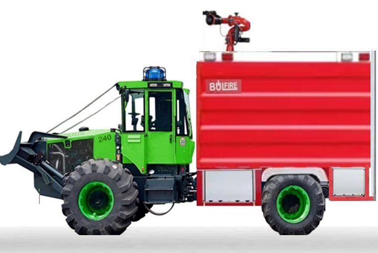

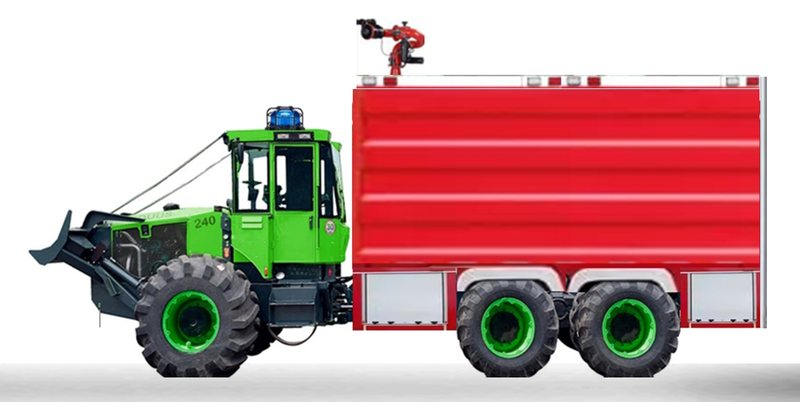
Тежки пожарни трактори с ремарке
Тежките пожарни трактори, които работят с ремарке, се изграждат върху тракторно шаси, специално проектирано и произведено за работа като горски трактор. Тракторните ремаркета са здрави и предназначени за работа по пресечен терен. Мощността на тежките пожарни трактори за работа без ремарке е 250 к.с. – 300 к.с. Те носят 20 000 л вода и имат пожарни помпи с дебит 2 400 л/мин. Общото количество вода, което носят пожарният трактор и пожарното ремарке, е 25 000 л. Това количество вода и голямата мощност и маневреност на тежкия пожарен трактор осигуряват успешното гасене на големи и сложни горски пожари.
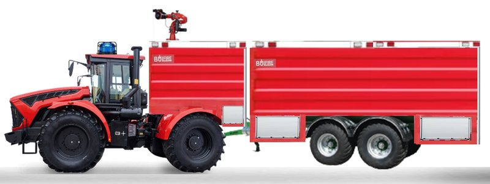

Върху тези базови шасита се изграждат пожарни трактори с висока проходимост и функционалност, които значително надхвърлят възможностите на пожарните автомобили при гасене на горски пожари. Конкретната конструкция на пожарните трактори се създава според изискванията на клиента за вида и обема на гасителните вещества, експлоатационните характеристики, допълнителното оборудване и защитните средства.
Всеки пожарен трактор се оборудва със съвременна пожарна помпа за нормално налягане до 12 bar или за нормално и високо налягане до 12 bar и 40 bar. По избор може да се монтира лафетен струйник с ръчно или електрическо управление от кабината на водача.

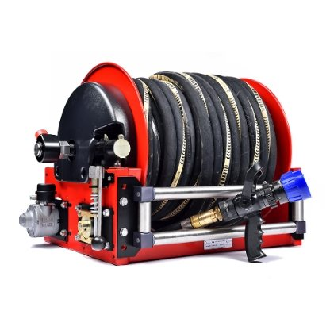
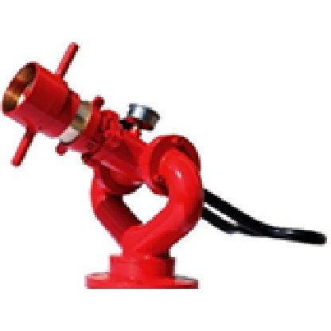
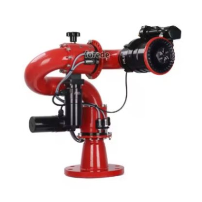
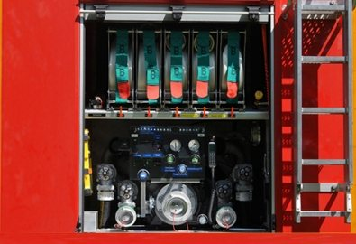

Когато общината не разполага със специализирани пожарни автомобили и ремаркета, пожарните трактори могат да се използват за гасене на големи горски пожари заедно с наличните пожарни автомобили за гасене на пожари в населени места. Това може да бъде много ефективна и евтина възможност за борба с горските пожари за пожарни служби, които нямат бюджет за закупуване на големи високопроходими пожарни автомобили и ремаркета.
Какви са експлоатационните възможности и предимства на пожарните трактори?
- Пожарните трактори за гасене на горски пожари са компактни, имат колесна формула 4×4 и голям пътен просвет – 450 мм – 650 мм. Нито един високопроходим пожарен автомобил няма толкова голям пътен просвет.
- Пожарните трактори имат късо междуосие от 2 500 мм – 3 000 мм и много големи ъгли на проходимост (преден ъгъл, ъгъл на рампата, заден ъгъл) – около 40 градуса, което ги прави машини с изключително висока проходимост. Нито един високопроходим пожарен автомобил няма такива параметри на междуосието и ъглите на проходимост.
- Пожарните трактори имат много малък минимален радиус на завиване – 5 м – 6,5 м. Нито един високопроходим пожарен автомобил няма толкова малък радиус на завиване по пресечен терен. Малкият радиус на завиване прави пожарните трактори много маневрени при препятствия или отделни дървета по време на гасене на горски пожари.
- Транспортната скорост на пожарните трактори е 30 км/ч – 40 км/ч. Минималната работна скорост на пожарния трактор е 9 км/ч – 1,8 км/ч. Тази ниска минимална работна скорост позволява на трактора да се движи непрекъснато със скоростта, с която се придвижват пожарникарите по време на гасенето. Това е голямо предимство, защото намалява дължината на маркучните линии, които пожарникарите трябва да използват. Нито един високопроходим пожарен автомобил няма толкова ниска минимална работна скорост. Затова при гасене на горски пожари автомобилите трябва да се придвижват на отсечки, което увеличава броя на маркучните линии, с които работят пожарникарите, или да се движат на полусъединител, което е неприемливо при работа през целия ден.
- Пожарните трактори гасят горски пожари с ремарке или без ремарке. Те носят 100 л – 500 л пенообразувател и 000 л – 25 000 л вода. Тези количества вода често надвишават количествата вода, които носят някои пожарни автомобили.
- Пожарните трактори са оборудвани със съвременни пожарни центробежни помпи, които се използват и при пожарните автомобили, с дебит 800 л/мин, 1 600 л/мин и 2 400 – 6 000 л/мин, за нормално налягане до 12 bar или за нормално и високо налягане до 12 bar и 40 bar.
- Пожарните помпи на пожарните трактори са оборудвани с вакуумни помпи, които позволяват засмукване на вода от водоем или използване на трактора за отводняване на сгради при наводнения.
- Пожарният трактор може да подава вода за водоснабдяване на други пожарни автомобили и пожарни трактори или самостоятелно да гаси пожар на място или в движение.
- Пожарните трактори могат да бъдат оборудвани и с метални рамки за защита при преобръщане и с гребла за прокарване на аварийни пътища за придвижване на пожарни автомобили и друга пожарна техника.
- По избор пожарните трактори могат да бъдат оборудвани с мобилни помпи за високо налягане (100 bar – 200 bar). Тези помпи обаче са ефективни само при гасене на ниска растителност (суха трева) или при догасяване на вече локализирани пожари. Малкият дебит и силно разпръснатата струя на тези помпи ги правят неефективни при гасене на пожари, развили се на голяма височина и обхванали цели дървета. В такъв случай малкият им дебит и силно разпръснатата струя не могат да достигнат огъня, защото конвективните потоци увличат и изпаряват водата, преди тя да достигне мястото на горене. Друго неудобство на помпите за високо налягане е малката дължина на маркучните линии – само 30 м – 60 м. При пожари, развили се на голяма височина и обхванали цели дървета, пожарният трактор осигурява ефективни мощни компактни и разпръснати струи до 10 – 12 bar и дължина на маркучните линии до 800 м.
Снимките по-долу ясно показват разликата между пожари в ниска суха трева и развити пожари с високи пламъци, обхванали цели дървета.

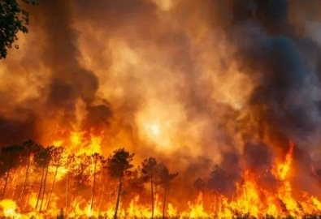
Изложената информация ясно показва, че използването на пожарни трактори е с висока целесъобразност и ефективност при гасене на горски пожари. Пожарните трактори ще предпазят обикновените пожарни автомобили за гасене на пожари в населени места от повреди и щети при използването им в горите.
За какво още могат да се използват леките пожарни трактори?
Водните резервоари и надстройката на леките пожарни трактори са изработени от неръждаема стомана или полиетилен с висока плътност и се демонтират лесно. Демонтирането им в сезоните без горски пожари позволява пожарният трактор да се използва за други аварийни и спасителни цели, като например:
Почистване на сняг от пътищата с гребло или роторен снегорин.


Опесъчаване и осоляване на пътищата и изтегляне на закъсали автомобили.


Изтегляне на автомобили и камиони, затънали в кал.

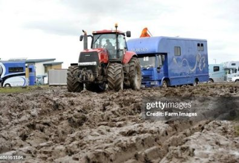
Отводняване на сгради при наводнения.
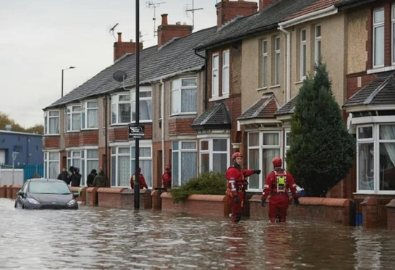
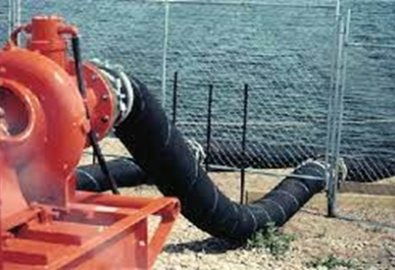
За какво още могат да се използват тежките пожарни трактори?
Резервоарите за вода и пяна на тежките пожарни трактори не могат да бъдат демонтирани, но и в този вид те могат да изпълняват всички аварийно-спасителни функции много по-ефективно от показаните по-горе леки пожарни трактори. Базовото шаси на тежките пожарни трактори може успешно да се използва и за други цели в труднодостъпни терени като гори, блата, пустини, джунгли, дълбок сняг или други терени, където обикновени или високопроходими превозни средства не могат да работят.
На практика пожарният трактор е универсална многофункционална машина, която може успешно да гаси горски и полски пожари. В зависимост от спецификата и големината на горските и полските терени – комбинация от 2 – 4 пожарни трактора с ремаркета, носещи 10 000 л – 15 000 л или 25 000 л вода, с общ обем вода до 120 000 л в рамките на една община. Това може да бъде една от най-ефективните и най-евтини възможности за значително повишаване на оперативните възможности на пожарната служба при гасене на горски и полски пожари и ликвидиране на последиците от други бедствия.
Въпреки по-високите технически параметри и по-големите експлоатационни възможности на високопроходимите леки пожарни трактори и пожарните ремаркета за гасене на горски пожари, цената им е 2 – 3 пъти (200% – 300%) по-ниска от цената на високопроходим пожарен автомобил. Цената на високопроходимите тежки пожарни трактори и пожарни ремаркета е по-ниска от цената на високопроходим пожарен автомобил, който носи подобно количество вода. Тази значителна разлика в цените позволява на общините с по-малък бюджет да оборудват пожарните си служби с пожарни трактори и ремаркета, които могат да се използват ефективно за гасене на големи и сложни горски пожари, при наводнения или други бедствия.